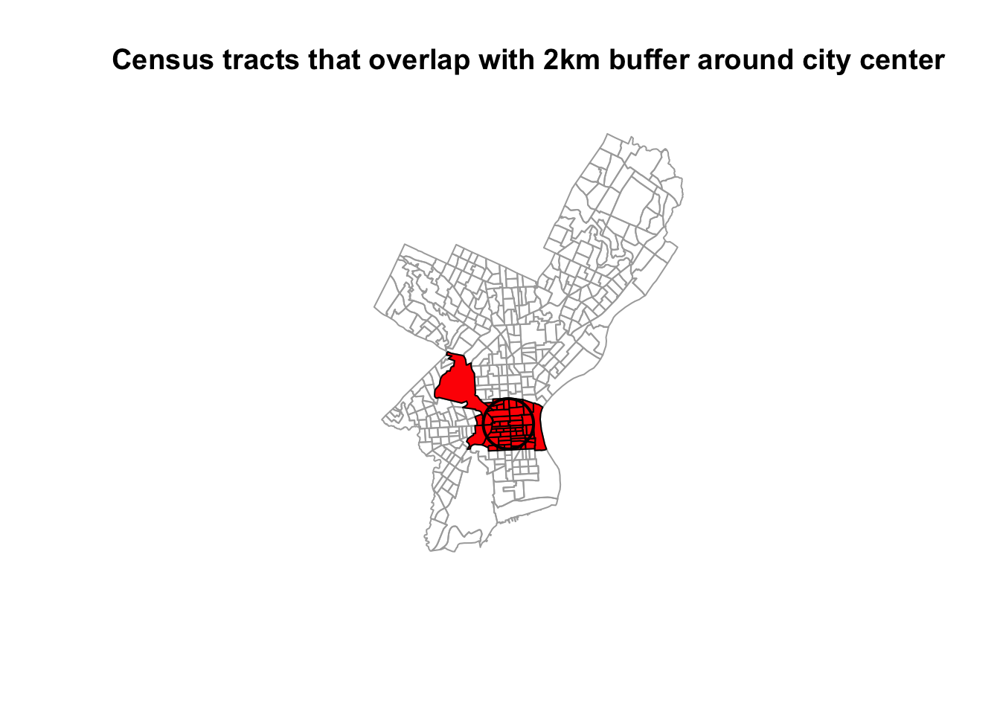
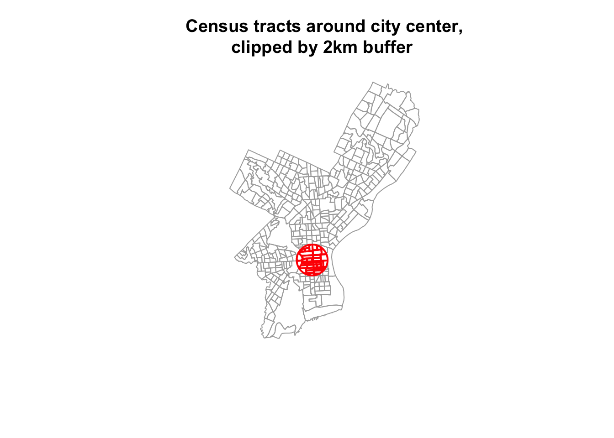
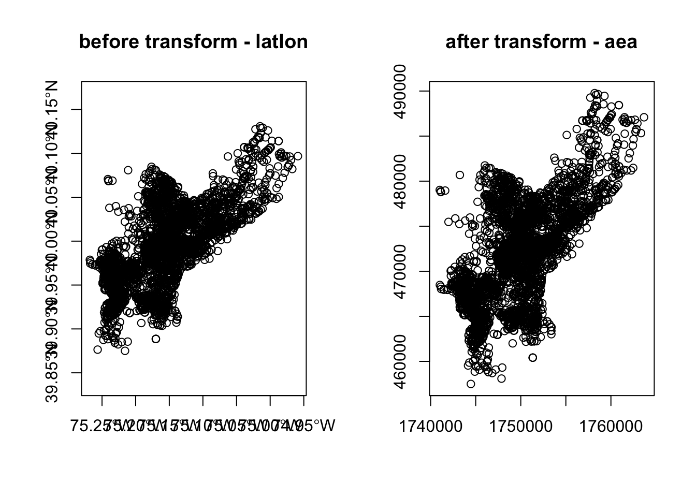
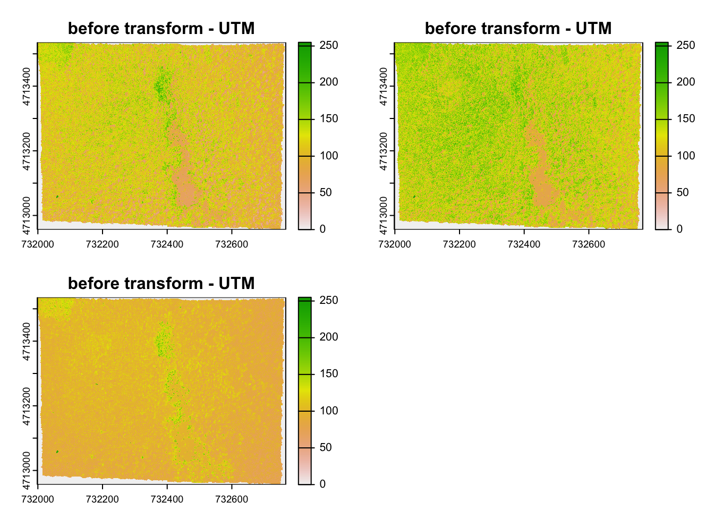
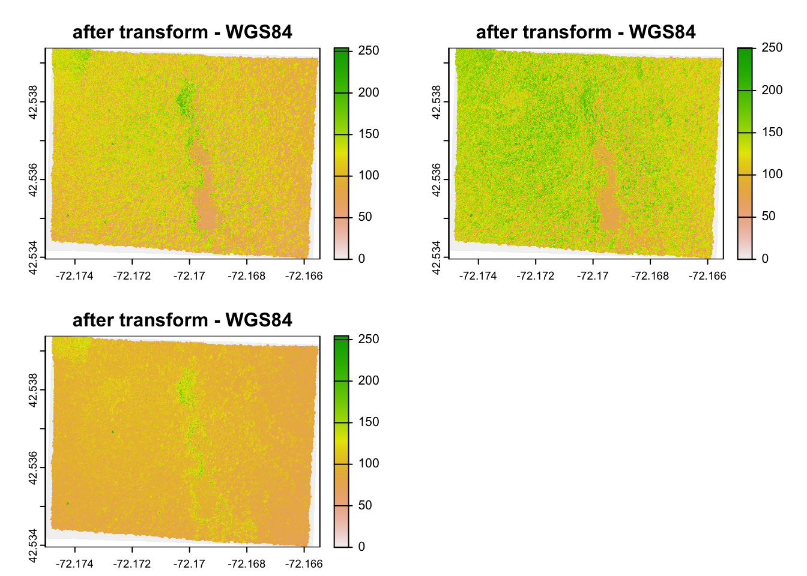
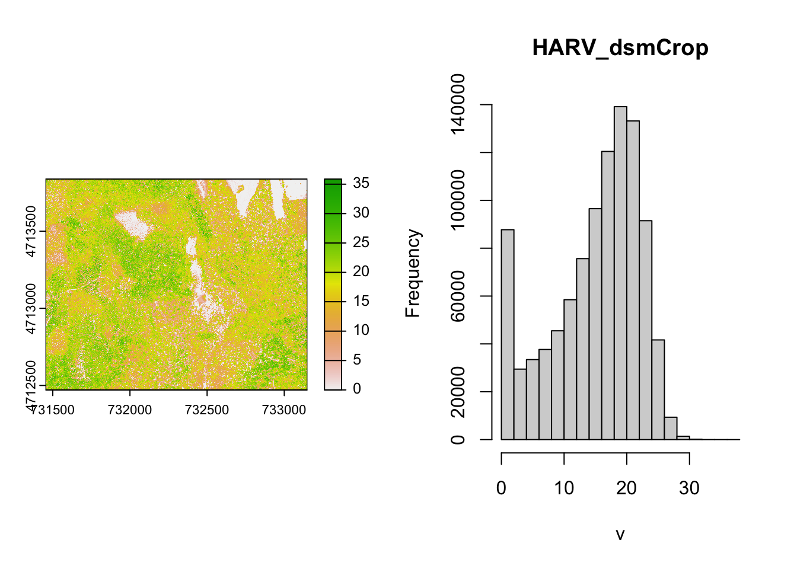

Chapter 2 Spatial data manipulation in R
Learning Objectives
- Join attribute data to a polygon vector file
- Reproject a vector file
- Select polygons of a vector by location
There are a wide variety of spatial, topological, and attribute data operations you can perform with R. Lovelace et al’s recent publication2 goes into great depth about this and is highly recommended.
In this section we will look at a few examples for libraries and commands that allow us to process spatial data in R and perform a few commonly used operations.
2.1 Attribute Join
An attribute join on vector data brings tabular data into a geographic context. It refers to the process of joining data in tabular format to data in a format that holds the geometries (polygon, line, or point).
If you have done attribute joins of shapefiles in GIS software like ArcGIS or QGis you know that you need a unique identifier in both the attribute table of the shapefile and the table to be joined.
First we will load the CSV table PhiladelphiaEduAttain.csv into a dataframe in R and name it ph_edu.
#> Rows: 384 Columns: 13
#> ── Column specification ────────────────────────────────────────────────────────
#> Delimiter: ","
#> chr (1): NAME
#> dbl (12): GEOID, fem_bachelor, fem_doctorate, fem_highschool, fem_noschool, ...
#>
#> ℹ Use `spec()` to retrieve the full column specification for this data.
#> ℹ Specify the column types or set `show_col_types = FALSE` to quiet this message.If you don’t have the object still loaded read the the PhillyTotalPopHHinc shapefile into an object named philly_sf. Check out the column names of philly_sf and of ph_edu to determine which one might contain the unique identifier for the join.
To join the ph_edu data frame with philly_sf we can use merge like this:
philly_sf_merged <- left_join(philly_sf, ph_edu, by = c("GEOID10" = "GEOID"))
names(philly_sf_merged) #> [1] "STATEFP10" "COUNTYFP10" "TRACTCE10" "GEOID10"
#> [5] "NAME10" "NAMELSAD10" "MTFCC10" "FUNCSTAT10"
#> [9] "ALAND10" "AWATER10" "INTPTLAT10" "INTPTLON10"
#> [13] "GISJOIN" "Shape_area" "Shape_len" "medHHinc"
#> [17] "totalPop" "NAME" "fem_bachelor" "fem_doctorate"
#> [21] "fem_highschool" "fem_noschool" "fem_ovr_25" "male_bachelor"
#> [25] "male_doctorate" "male_highschool" "male_noschool" "male_ovr_25"
#> [29] "pop_ovr_25" "geometry"We see the new attribute columns added, as well as the geometry column.
2.2 Topological Subsetting: Select Polygons by Location
For the next example our goal is to select all Philadelphia census tracts within a range of 2 kilometers from the city center.
Think about this for a moment – what might be the steps you’d follow?
## How about:
# 1. Get the census tract polygons.
# 2. Find the Philadelphia city center coordinates.
# 3. Create a buffer around the city center point.
# 4. Select all census tract polygons that intersect with the center bufferWe will use philly_sf for the census tract polygons.
In addition, we need to create a sf Point object with the Philadelphia city center coordinates:
\[x = 1750160\] \[y = 467499.9\]
These coordinates are also in the USA Contiguous Albers Equal Area Conic projected CRS, which is the same as CRS as philly_sf.
With this information, we create a object that holds the coordinates of the city center. Since we don’t have attributes we will just create it as a simple feature collection, scf.
# if you need to read in again:
# philly_sf <- st_read("data/Philly/", quiet = T)
# make a simple feature point with CRS
philly_ctr_sfc <- st_sfc(st_point(c(1750160, 467499.9)), crs = st_crs(philly_sf))For the spatial operations we can recur to the suite of geometric operations that come with the sf package.
We create a 2km buffer around the city center point:
Ok. Now we can use that buffer to select all census tract polygons that intersect with the center buffer. In order to determine the polygons we use st_intersects, a geometric binary which returns a vector of indices of the polygons that intersect with the buffer.
#> Sparse geometry binary predicate list of length 1, where the predicate
#> was `intersects'
#> 1: 3, 10, 11, 12, 13, 19, 20, 21, 50, 51, ...We have created a sgbp object, which is a “Sparse Geometry Binary Predicate”. It is a so called sparse matrix, which is a list with integer vectors only holding the indices for each polygon that intersects. In our case we only have one vector, because we only intersect with one buffer polygon, so we can extract this first vector with philly_buf_intersects[[1]] and use it for subsetting:
philly_sel<- philly_sf[philly_intersects[[1]],]
# plot
plot(st_geometry(philly_sf), border="#aaaaaa", main="Census tracts that overlap with 2km buffer around city center")
plot(st_geometry(philly_sel), add=T, col="red")
plot(st_geometry(philly_buf), add=T, lwd = 2)
Note the difference to st_intersection, which performs a geometric operation and creates a new sf object which cuts out the area of the buffer from the polygons like cookie a cutter:
#> Geometry set for 46 features
#> Geometry type: GEOMETRY
#> Dimension: XY
#> Bounding box: xmin: 1748160 ymin: 465499.9 xmax: 1752160 ymax: 469499.9
#> Projected CRS: Albers
#> First 5 geometries:#> POLYGON ((1752157 467395.2, 1752153 467339.7, 1...#> POLYGON ((1752149 467290.8, 1752135 467187, 175...#> POLYGON ((1751347 466573.5, 1751321 467037.6, 1...#> POLYGON ((1750298 467616.7, 1750148 467615.2, 1...#> POLYGON ((1748853 467255, 1748874 467605.3, 174...plot(st_geometry(philly_sf), border="#aaaaaa", main="Census tracts around city center, clipped by 2km buffer ")
plot(philly_intersection, add=T, lwd = 2, border = "red")
2.3 Reprojecting
Occasionally you may have to change the coordinates of your spatial object into a new Coordinate Reference System (CRS). Functions to transform, or reproject spatial objects typically take the following two arguments:
- the spatial object to reproject
- a CRS object with the new projection definition
You can reproject
- a
sfobject withst_transform()
- a
SpatRasterobject withproject()
The perhaps trickiest part here is to determine the definition of the projection, which needs to be a character string in proj4 format. You can look it up online. For example for UTM zone 33N (EPSG:32633) the string would be:
+proj=utm +zone=33 +ellps=WGS84 +datum=WGS84 +units=m +no_defs
You can retrieve the CRS:
- from an
sfobject withst_crs() - from a
SpatRasterobject withcrs()
Let us go back to the "PhillyHomicides" shapefile we exported earlier. Let’s read it back in and reproject it so it matches the projection of the Philadelphia Census tracts.
Now let us check the CRS for both files.
#If you need to read the file back in:
#philly_homicides_sf <- st_read("data/PhillyHomicides/")
st_crs(philly_sf)$proj4string#> [1] "+proj=aea +lat_0=37.5 +lon_0=-96 +lat_1=29.5 +lat_2=45.5 +x_0=0 +y_0=0 +ellps=GRS80 +units=m +no_defs"#> [1] "+proj=longlat +datum=WGS84 +no_defs"We see that the CRS are different: we have +proj=aea... and +proj=longlat.... AEA refers to USA Contiguous Albers Equal Area Conic which is a projected coordinate system with numeric units. We will need this below for our spatial operations, so we will make sure both files are in that same CRS.
We use st_transform and assign the result to a new object. Note how we also use str_crs to extract the projection definition from philly_sf, so we don’t have to type it out.
We can use the range() command from the R base package to compare the coordinates before and after reprojection and confirm that we actually have transformed them. range() returns the min and max value of a vector of numbers.
#> [1] -75.26809 40.13086#> [1] 457489.7 1763671.8We can also compare them visually with:
par(mfrow=c(1,2))
plot(st_geometry(philly_homicides_sf), axes=TRUE, main = "before transform - latlon")
plot(st_geometry(philly_homicides_sf_aea), axes=TRUE, main = "after transform - aea")
Lastly, let us save the reprojected file as PhillyHomicides_aea shapefile, as we will use it later on.
2.3.1 Raster reprojection
Here is what it would look like to reproject the HARV raster used earlier to a WGS84 projection. We see that see that the original projection is in UTM.
#> [1] "+proj=utm +zone=18 +datum=WGS84 +units=m +no_defs"#> [1] "+proj=utm +zone=18 +datum=WGS84 +units=m +no_defs"Let’s look at the coordinates to see the effect:
#> SpatExtent : 731998.5, 732766.75, 4712956.25, 4713535.5 (xmin, xmax, ymin, ymax)#> SpatExtent : -72.1750316832584, -72.1654516638594, 42.5339461813323, 42.5393881837189 (xmin, xmax, ymin, ymax)Due to the reprojection the number of cells has also changed:
#> [1] 7120141#> [1] 6859650And here is the visual proof:


2.4 Spatial Aggregation: Points in Polygons
Now that we have both homicides and census tracts in the same projection we will forge ahead and ask for the density of homicides for each census tract in Philadelphia: \(\frac{{homicides}}{area}\)
To achieve this this we join the points of homicide incidence to the census tract polygon and count them up for each polygon. You might be familiar with this operation from other GIS packages.
We will use piping and build up our object in the following way. First we calculate the area for each tract. We use the st_area function on the geometry column and add the result.
Next, we use st_join to perform a spatial join with the points:
philly_sf %>%
mutate(tract_area = st_area(geometry)) %>%
st_join(philly_homicides_sf_aea) %>%
head()Now we can group by a variable that uiquely identifies the census tracts, (we choose GEOID10) and use summarize to count the points for each tract and calculate the homicide rate. Since our units are in sq meter we multiply by by 1000000 to get sq km. We also need to carry over the area, which I do using unique.
We also assign the output to a new object philly_crimes_sf.
philly_crimes_sf <- philly_sf %>%
mutate(tract_area = st_area(geometry)) %>%
st_join(philly_homicides_sf_aea) %>%
group_by(GEOID10) %>%
summarize(n_homic = n(),
tract_area = unique(tract_area),
homic_rate = as.numeric(1e6 * (n_homic/tract_area))) Finally, we write this out for later:
2.5 Raster calculations with terra
We often want to perform calculations on two or more rasters to create a new output raster. For example, if we are interested in mapping the heights of trees across an entire field site, we might want to calculate the difference between the Digital Surface Model (DSM, tops of trees) and the Digital Terrain Model (DTM, ground level). The resulting dataset is referred to as a Canopy Height Model (CHM) and represents the actual height of trees, buildings, etc. with the influence of ground elevation removed.
First let’s read in the two datasets.
Now we can subtract the DTM from the DSM to create a Canopy Height Model. It will for each CHM pixel calculate the difference of the respective DTM and DSM pixels.
#> Warning: [hist] a sample of 43% of the cells was used (of which 0% was NA)
This works fine for the small rasters in this tutorial. However, the calculation above becomes less efficient when computations are more complex or file sizes become large.
Thet terra package contains a function called lapp()function to make processing more efficient. It takes two or more rasters and applies a function to them. The generic syntax is:
outputRaster <- lapp(x, fun)where x is a SpatRasterDataset and fun is a custom function for the operation you want to perform.
As arguments for our lapp operation we use the sds() function and provide it with the list of rasters that we want to operate on. As custom function we provide the function with two arguments (r1 and r1) that subtracts the second (r2) from the first (r1) and returns the difference. The output of lapp is a SpatRaster and we assign it to a new variable CHM_ov_HARV.
#> Warning: [hist] a sample of 43% of the cells was used (of which 0% was NA)
Lovelace, R., Nowosad, J., & Muenchow, J. (2024). Geocomputation with R. CRC Press.↩︎